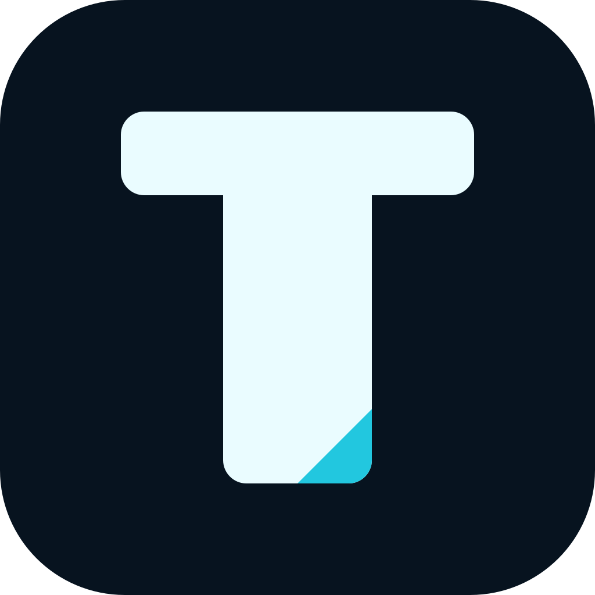
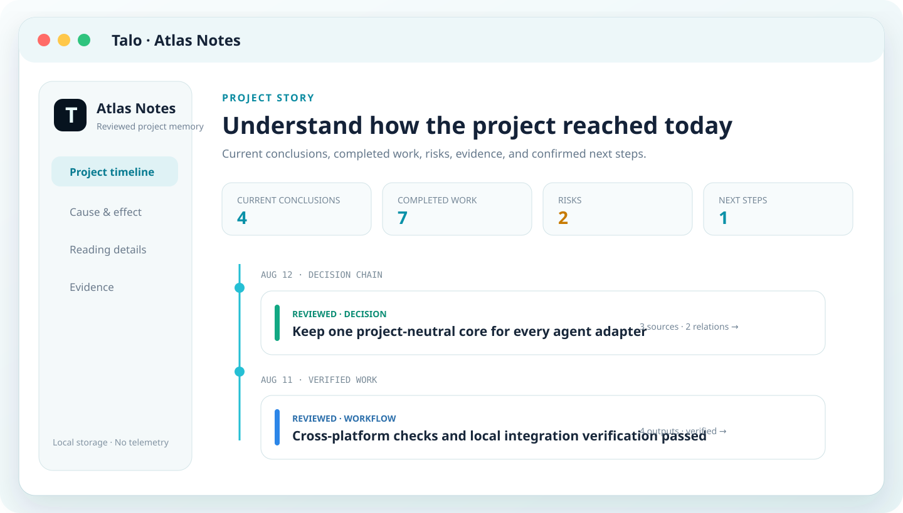
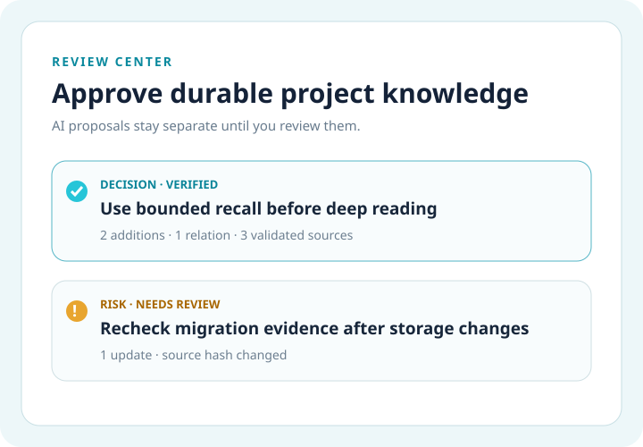
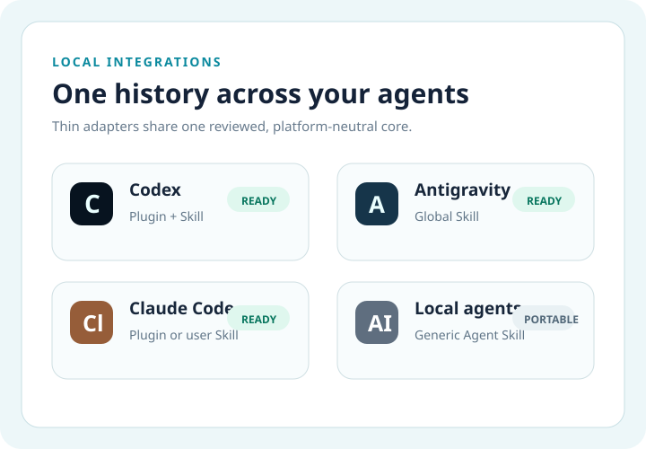

不用反复解释
新任务先读取与目标相关的结论、流程、风险和下一步。

TaloNever start over.跨 Agent 的本地项目记忆
Talo 把已经完成的工作整理成一份经过审核、可追溯的项目历史，让 Codex、Claude Code、Antigravity 和其他本地 Agent 只召回当前真正需要的内容。

一份项目历史，连接你已经在使用的本地 AI 工具。
减少重复工作
Talo 保存的是经过审核、能找到证据、可以判断是否过期的项目知识，而不是把所有对话永久塞进上下文。
新任务先读取与目标相关的结论、流程、风险和下一步。
原因、行动、产物、来源和结论保存在同一工作单元中。
每个项目严格隔离，跨项目读取需要显式、单向、只读授权。
先返回精简候选，再按固定预算深读最有价值的内容。
工作方式
STEP 01 · RECALL
talo recall --path "$PWD" --query "release website"
候选先以紧凑摘要出现；Agent 只深读被推荐并且仍然有效的记忆。
审核优先
Codex、Claude Code、Antigravity 和通用 Agent 都可以把候选放进同一个审核入口。未审核内容不会提前进入正式时间线和关系图。


本地、私密、可检查
Markdown、JSON 和单文件 HTML；没有云同步、数据库或远程运行时。
项目 A 不能读取项目 B，除非用户创建明确的单向只读链接。
每个引用文件独立检查路径、授权和哈希；变化后明确标记过期。
Talo 0.14
开源、本地优先、Apache-2.0。